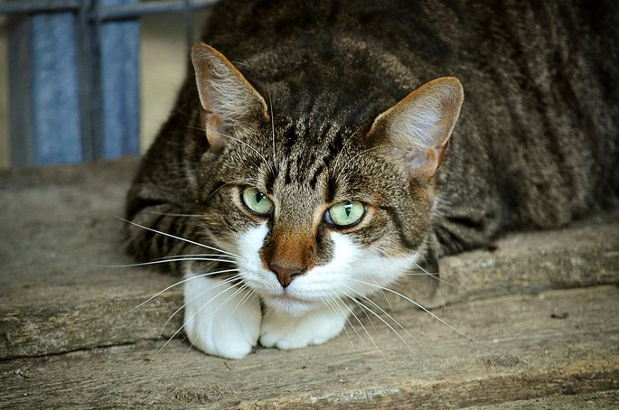
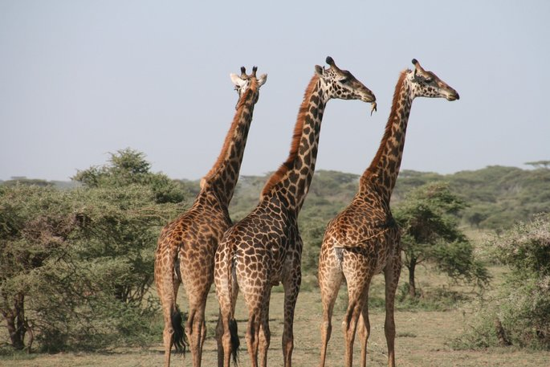

Gato
Felis catus
| Reino: | Animalia |
| Classe: | Mammalia |
O gato (Felis silvestris catus), também conhecido como
gato caseiro, gato urbano ou gato doméstico, é um
mamífero carnívoro da família dos felídeos, muito popular como animal de estimação. Ocupando o topo da
cadeia alimentar, é predador natural de diversos animais, como roedores, pássaros, lagartixas e alguns
insetos. Segundo pesquisas realizadas por instituições norte-americanas, os gatos consistem no segundo
animal de estimação mais popular do mundo, estando numericamente atrás apenas dos peixes de aquário.
A primeira associação dos gatos com os humanos da qual se tem evidência ocorreu há
cerca de 9 500 anos, período mais antigo ao estimado anteriormente, que oscilava entre 3 500 e 8 000
anos. A subfamília Felinae, que agrupa os gatos domésticos, surgiu há cerca de 12 milhões de anos,
expandindo-se a partir da África subsariana até alcançar as terras do atual Egito. Acredita-se que o
gato-selvagem-africano (Felis silvestris lybica) era seu antepassado imediato. Adicionalmente,
evidências genéticas assinalam que os gatos domésticos atuais partilham uma procedência direta com os gatos
selvagens do Oriente Médio.
Existem cerca de 250 raças de gato doméstico, cujo peso variável entre 2,5 a 12 kg
coloca a espécie na categoria de animal doméstico de pequeno a médio porte. Assim como ocorre com algumas
raças de cães que apresentam esta mesma faixa de peso, o gato doméstico pode viver entre quinze e vinte
anos. Dados censitários apontam que nos Estados Unidos existem mais gatos domésticos do que
cachorros. Estimativas recentes indicam que, em breve, o Brasil irá mostrar essa mesma característica,
passando a deter maior população felina do que canina em suas residências.
Devido à sua personalidade independente, tornou-se um animal de companhia em
diversos lares ao redor do mundo, agradando pessoas dos mais variados estilos de vida. Na cultura humana,
figura da mitologia às superstições, passando por personagens de desenhos animados, tiras de jornais, filmes
e contos de fadas. Entre suas mais conhecidas representações, estão os gatos: Tom, Frajola, Manda-Chuva,
Gato Félix, Gaturro, O Gato de Botas e Garfield.
Girafa
Giraffa camelopardalis
| Reino: | Animalia |
| Classe: | Mammalia |
O termo girafa (do árabe zarAfa(t), pelo italiano
giraffa) é a designação dada a mamíferos artiodátilos, ruminantes, do gênero Giraffa, da
família dos girafídeos, no qual constam quatro espécies (até 2016 considerava-se uma única espécie, a
Giraffa camelopardalis, ou camelo-leopardo, como eram chamadas pelos romanos quando elas existiam
no norte da África, pois acreditava-se que vinham de uma mistura de uma fêmea camelo, com um macho leopardo)
São ungulados com número par de dedos.
As girafas são os únicos membros de seu gênero e, juntas com os ocapis, formam a
família Giraffidae. Atualmente estão listadas quatro espécies de girafa existentes e nove já extintas (ver
abaixo), diferenciadas também pela distribuição geográfica e pelo padrão das manchas. Essas várias
subespécies de girafas agora habitam as terras secas ao sul do Saara. As girafas se distribuem em dois
grupos: girafa-do-norte que são tricornes, isto é, com um corno nasal interocular e dois frontoparietais,
apresentando pelagem predominantemente reticulada; e girafa-do-sul, sem corno nasal e a pelagem tem
predominantemente malhas irregulares.
Os machos chegam a 5 metros de altura e com suas línguas preênseis que alcançam até
50 centímetros são capazes de pegar as folhas de acácias, por entre pontiagudos espinhos nos altos dos
galhos, que são sua principal fonte de alimentação. Elas são capazes de comer as folhas das árvores até 6
metros de altura. Para poderem pastar, têm de afastar uma da outra as pernas dianteiras. Devido ao baixo
teor nutritivo das folhas, as girafas precisam comer grandes quantidades e passam quase 20 horas por dia
comendo. O comprimento do corpo pode ultrapassar os 2,25 metros e ainda possui uma cauda com oitenta
centímetros de comprimento, não contando com o pincel final. O seu peso pode ultrapassar os 500 quilogramas.
Apesar do seu tamanho, a girafa pode atingir a velocidade de 56 km/h, suficiente para fugir de seus
predadores.
As girafas, como todos os mamíferos, possuem sete vértebras cervicais. Os seus
pescoços, entretanto, são os maiores dos animais atuais, pelo que é pouco flexível. Por causa de seu pescoço
comprido e rígido, seu sistema vascular possui a fama de ser o responsável pela maior pressão sanguínea do
reino animal. O coração tem dois orifícios: um que bombeia sangue para o pulmão e membros e outro que
alimenta o cérebro com o líquido vermelho. Este último é fino, visto que os músculos são maiores, assim a
força necessária para o bombeamento não é tão grande como se imagina. No entanto, quando a girafa tem de
beber água, a pressão sanguínea da cabeça aumenta muito e só não a mata devido a duas particularidades
excepcionais. Próximo ao cérebro, existe uma rede de vasos capilares que se ramificam em inúmeras veias
menores dentro do crânio do animal. Eles servem para amortecer e distribuir essa sobrecarga de sangue
jorrada pelo coração quando a girafa está com o pescoço abaixado. Além disso, uma veia grossa repleta de
válvulas que retorna ao coração recebe parte do sangue bombeado. Quando o sangue pressiona demasiadamente os
vasos da cabeça da girafa, ele é desviado para essa veia. Repleta de válvulas que se fecham com a passada do
sangue, a veia alivia a pressão da cabeça e não deixa que o animal morra cada vez que deseja matar a sede.